Vào Wyckdelta Chart trong 3 bước
Cài Tailscale, nhận lời mời, rồi tự tạo tài khoản tại wyckdelta.tail65e625.ts.net. Khoảng 5 phút, chỉ làm một lần. Chọn thiết bị bạn đang dùng, trang sẽ chỉ hiện đúng các bước cho thiết bị đó.
- File Wyckdelta.zip (app cho Windows): tải ở Bước 1 ngay bên dưới
- 1 link mời Tailscale (dùng ở Bước 2)
- Một Gmail cá nhân để đăng nhập Tailscale (không dùng email công ty)
Không cần ai gửi tên đăng nhập hay mật khẩu: bạn tự tạo tài khoản Wyckdelta Chart ở Bước 3.
Địa chỉ Wyckdelta Chart luôn là wyckdelta.tail65e625.ts.net (có nút sao chép ở Bước 3).
1BƯỚC 1Cài app Tailscale
Mở Tailscale trên App Store Mở Tailscale trên Google Play Tải Tailscaletailscale.com/download- Bấm Nhận để cài, rồi mở app Tailscale.
- Bấm Get Started.
- Máy hỏi “Tailscale muốn thêm cấu hình VPN” → bấm Cho phép, nhập mật mã mở máy.
- Bấm Log in → Sign in with Google → chọn Gmail cá nhân của bạn.
- Bấm Cài đặt, rồi mở app Tailscale.
- Bấm Get Started.
- Màn hình “Welcome to Tailscale” hiện ra → bấm Connect. Máy hỏi “Yêu cầu kết nối” (VPN) → bấm OK. Máy hỏi quyền thông báo → bấm Cho phép.
- Bấm Log in → Sign in with Google → chọn Gmail cá nhân của bạn.
- Mac (cần macOS 13 trở lên): tải bản cho macOS (file .pkg), mở file để cài, rồi mở app Tailscale.
Lần đầu mở, macOS chặn “phần mở rộng hệ thống” của Tailscale: vào Cài đặt hệ thống (System Settings) → Cài đặt chung (General) → Login Items & Extensions → Network Extensions → bấm ⓘ → bật Tailscale Network Extension (macOS 14 trở xuống: Quyền riêng tư & bảo mật (Privacy & Security) → Allow / Cho phép), nhập mật khẩu máy. Máy hỏi thêm cấu hình VPN → bấm Cho phép.
Không làm được bước này thì cài Tailscale từ Mac App Store (cần Apple ID): bản đó chỉ hỏi cấu hình VPN. Không cài cả hai bản cùng lúc.
Máy Windows không cài được app Wyckdelta Chart (máy công ty): bấm Download bản Windows, mở file vừa tải, bấm Install. - Tìm biểu tượng Tailscale: Mac ở thanh menu trên cùng; Windows ở góc phải dưới, cạnh đồng hồ (không thấy thì bấm mũi tên ^).
- Bấm vào biểu tượng (Windows: chuột phải) → Log in.
- Trình duyệt mở ra → Sign in with Google → chọn Gmail cá nhân → Connect.
“Tailscale” muốn thêm cấu hình VPN
Yêu cầu kết nối
Tailscale muốn thiết lập kết nối VPN
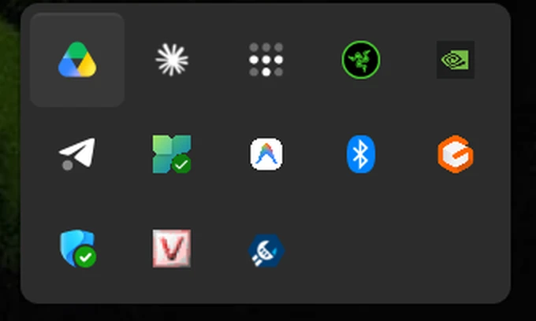
2BƯỚC 2Bấm link mời
- Mở tin nhắn, bấm vào link mời Wyckdelta đã gửi.
Link bắt đầu bằng login.tailscale.com - Nếu trang hỏi đăng nhập: bấm Sign in with Google, chọn đúng Gmail ở Bước 1.
- Bấm nút Accept (có thể ghi Accept invite; nghĩa là “Nhận lời mời”).
1BƯỚC 1Tải và mở app Wyckdelta Chart
Tải app Wyckdelta Chart cho WindowsWyckdelta.zip · 18 MB · Windows 10 / 11- Bấm nút vàng ở trên. File Wyckdelta.zip nằm trong thư mục Tải xuống (Downloads). Trình duyệt hỏi có giữ file không thì bấm Giữ lại (Keep).
- Bấm chuột phải vào file Wyckdelta.zip → Giải nén tất cả… (Extract All) → Giải nén.
- Thư mục mới mở ra. Bấm đúp vào Wyckdelta.exe.
- Nếu Windows hiện khung xanh “Windows đã bảo vệ PC của bạn”: bấm Thông tin bổ sung → Vẫn chạy.
Windows đã bảo vệ PC của bạn
Microsoft Defender SmartScreen đã ngăn một ứng dụng không xác định khởi động…Thông tin bổ sung
Windows đã bảo vệ PC của bạn
Ứng dụng: Wyckdelta.exeNhà phát hành: Không xác định
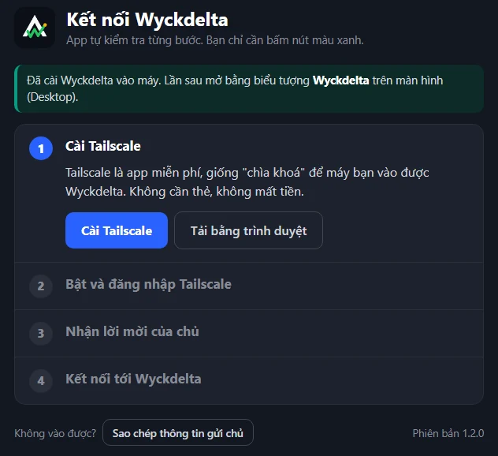
2BƯỚC 2Bấm nút xanh trong app
Cửa sổ Kết nối Wyckdelta Chart có 4 dòng. App tự kiểm tra máy bạn và chỉ mở đúng dòng cần làm; làm xong dòng nào, app tự đánh dấu ✓ xanh và mở dòng tiếp theo. Bạn chỉ cần làm theo 4 phần 2a → 2d dưới đây và để cửa sổ app mở trong lúc làm. Lỡ tắt thì bấm đúp biểu tượng Wyckdelta Chart trên màn hình, app tự nhận ra bạn đã làm tới đâu.
2a · Cài Tailscale
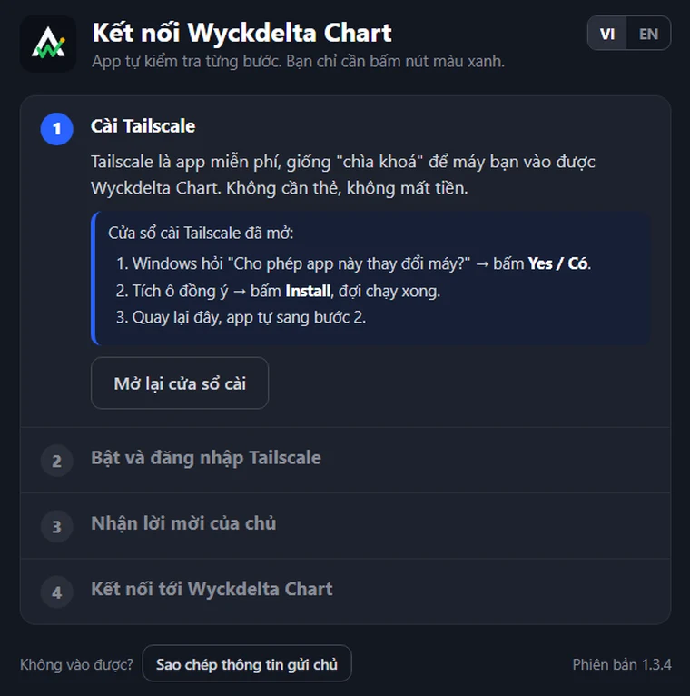
- 1Bấm nút xanh Cài Tailscale (dòng 1, như ảnh cuối Bước 1). App tự tải Tailscale (miễn phí), mở cửa sổ cài và chuyển sang như ảnh bên.
- 2Windows hỏi “Bạn có muốn cho phép ứng dụng này thực hiện thay đổi…?” (có thể hiện trước hoặc sau khi bấm Install) → bấm Yes / Có.
- 3Trong cửa sổ cài Tailscale: tích ô đồng ý điều khoản → bấm Install → đợi thanh chạy xong → bấm Close.
- 4Quay lại cửa sổ Kết nối Wyckdelta Chart. Dòng 1 có dấu ✓ là xong.
2b · Đăng nhập Tailscale bằng Gmail
Phần này hay làm khách kẹt nhất. Đọc hết 4 bước con trước khi bấm.
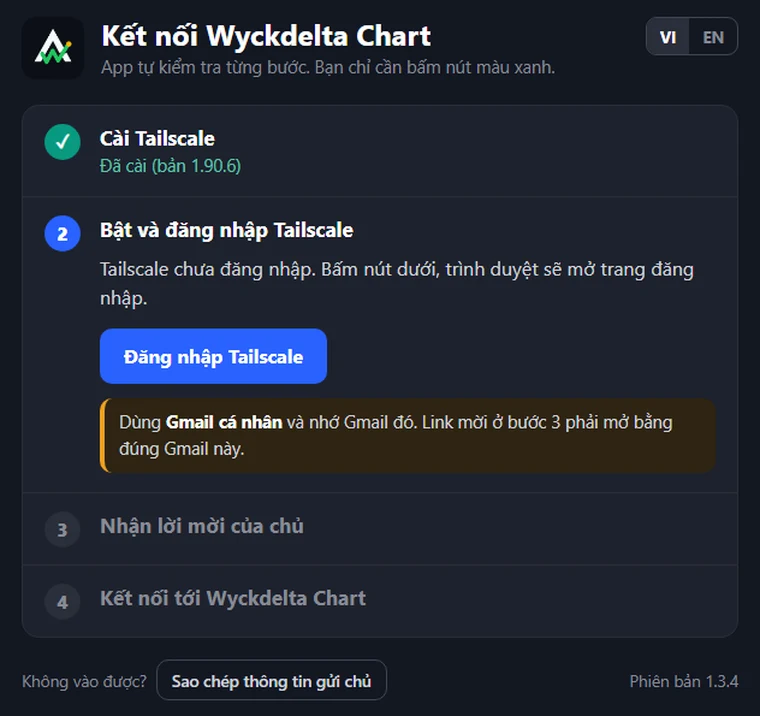
1- 1Bấm nút xanh Đăng nhập Tailscale. Trình duyệt mặc định của máy (Chrome, Edge…) tự mở trang đăng nhập của Tailscale.
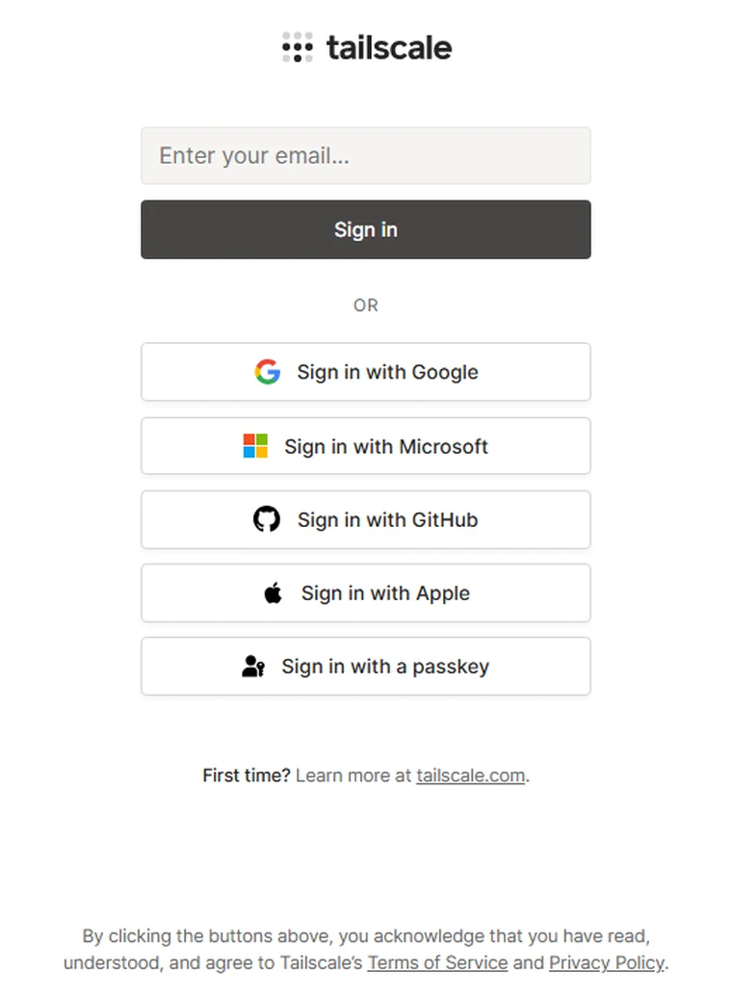
2- 2Trên trang tailscale trong trình duyệt, bấm Sign in with Google, rồi chọn Gmail cá nhân của bạn. Nhớ Gmail này: link mời ở phần 2c phải mở bằng đúng Gmail đó.
- 3Lần đầu dùng Tailscale, trang sẽ hỏi thêm vài câu để tạo tài khoản Tailscale (ví dụ chọn Personal use, dùng cá nhân). Cứ chọn rồi bấm tiếp, miễn phí, không cần thẻ.
- 4Trang hỏi có cho máy tính này vào mạng không thì bấm Connect. Quay lại app: dòng 2 có dấu ✓ và ghi Gmail của bạn là xong.
Đây là chỗ khách hay kẹt nhất. Trang đó là trang quản trị của Tailscale: tài khoản Tailscale đã tạo xong, nhưng máy tính của bạn chưa được nối vào. Ở trang đó không có gì cần bấm (đừng bấm Add device, đừng tải thêm gì). Làm như sau:
- Quay về cửa sổ Kết nối Wyckdelta Chart, bấm Mở lại trang đăng nhập (ảnh dưới, số 1).
- Trình duyệt mở lại trang Tailscale. Lần này Gmail đã đăng nhập sẵn nên trang chỉ hỏi nối máy: bấm Connect.
- Đợi vài giây, dòng 2 trong app có dấu ✓.
Machines
Manage the devices connected to your tailnet.
How to connect devices to your secure, private network
Add first device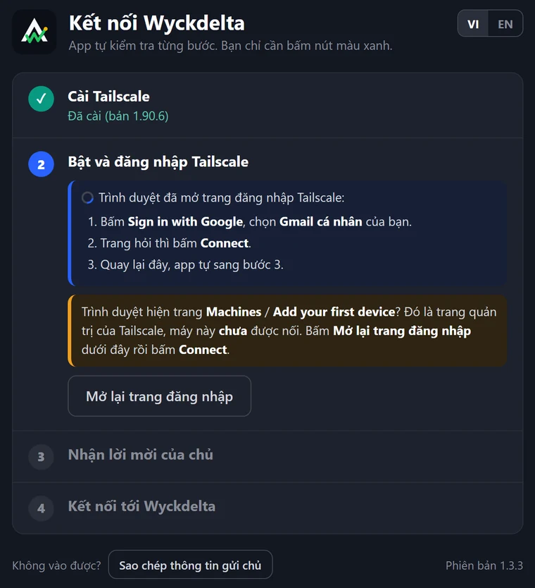
1- 1Mở lại trang đăng nhập: bấm khi lỡ đóng tab trình duyệt, khi trình duyệt hiện trang Machines, hoặc khi đợi quá 1 phút mà dòng 2 chưa có ✓.
2c · Nhận lời mời của chủ
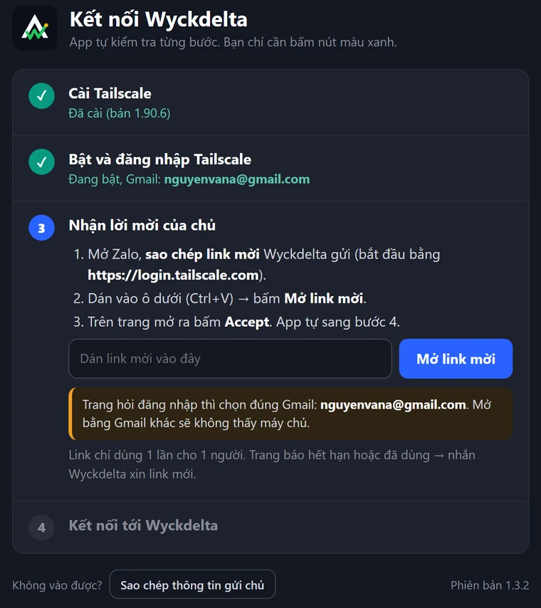
1 2- 1Mở tin nhắn Wyckdelta gửi (Messenger / Zalo), bấm chuột phải vào link mời (bắt đầu bằng https://login.tailscale.com) → Sao chép liên kết (Copy link). Bấm vào ô Dán link mời vào đây → Ctrl+V.
- 2Bấm Mở link mời. Trên trang Tailscale mở ra, bấm Accept.
2d · Kết nối tới Wyckdelta Chart
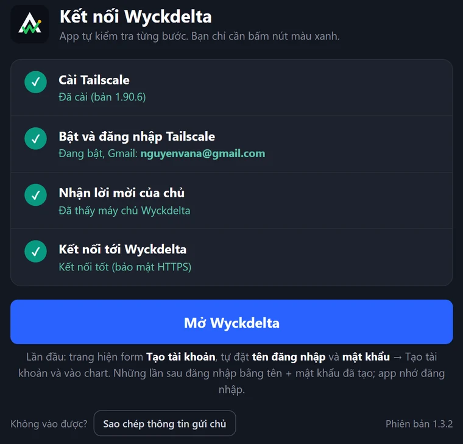
1- 1App tự kiểm tra đường tới máy chủ. Đủ 4 dấu ✓, app tự mở trang Wyckdelta Chart sau khoảng 1 giây. Không tự mở thì bấm nút lớn Mở Wyckdelta Chart. Sang Bước 3 để tạo tài khoản.
Dòng 2 báo Tailscale tắt hoặc chưa chạy
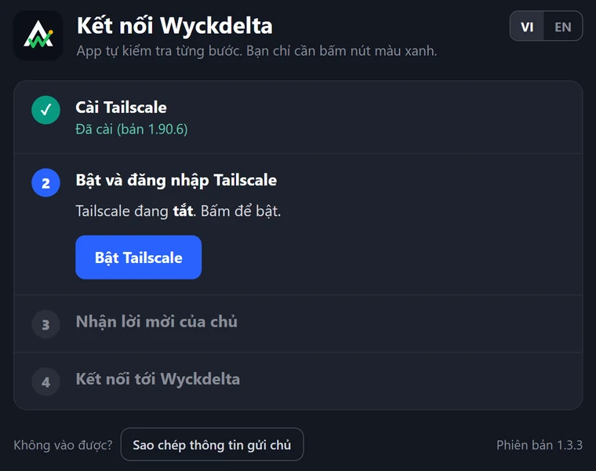
1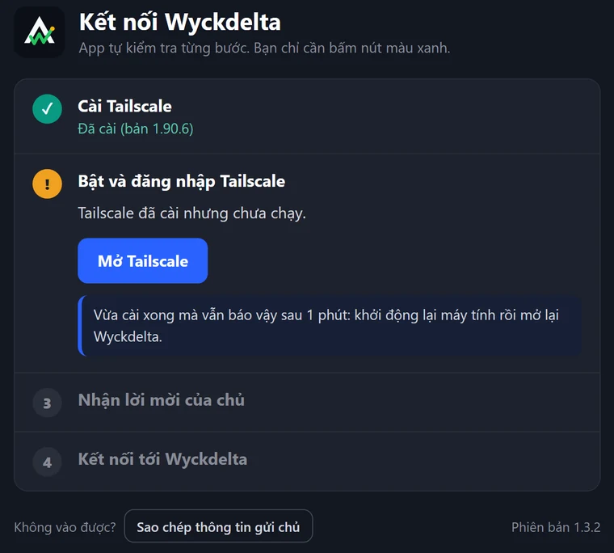
1- Bấm nút xanh trong app (số 1 trên ảnh), đợi 30 giây.
- Vẫn vậy: khởi động lại máy tính (Start → Nguồn → Khởi động lại), rồi mở lại Wyckdelta Chart bằng biểu tượng trên màn hình.
- Máy có app VPN khác (Cloudflare WARP, FortiClient, VPN công ty…) hoặc phần mềm diệt virus chặn mạng: tắt VPN đó, rồi thử lại. Máy chỉ chạy được một VPN một lúc.
- Cách tự làm bằng tay: bấm mũi tên ^ cạnh đồng hồ góc phải dưới → bấm chuột phải vào biểu tượng Tailscale (ô 9 chấm, ảnh trái) → menu Tailscale hiện ra (ảnh phải). Chưa đăng nhập thì bấm Log in; đang tắt thì bấm dòng trên cùng Tailscale cho có dấu ✓ và chữ Connected.
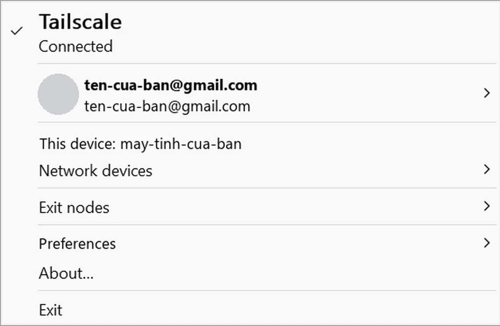
13BƯỚC 3Mở Wyckdelta Chart, tạo tài khoản
App Wyckdelta Chart tự mở trang Wyckdelta Chart khi đủ 4 dấu ✓ (hoặc bấm Mở Wyckdelta Chart). Trang trong app giống hệt trang trên trình duyệt bên dưới.
Trước tiên: mở app Tailscale, kiểm tra đang bật (công tắc xanh / Connected). Địa chỉ dưới đây chỉ mở được khi Tailscale đang bật.
https://wyckdelta.tail65e625.ts.net
- Mở app Tailscale. Trong danh sách máy, bấm vào dòng wyckdelta (có chấm xanh).
- Màn hình chi tiết hiện ra như ảnh dưới. Bấm nút sao chép (khoanh đỏ) ở dòngBấm vào dòng wyckdelta.tail65e625.ts.net · MagicDNS (mục Tailscale addresses) để sao chép.
- Mở SafariChrome, bấm vào thanh địa chỉ, gõ https:// rồi dán (giữ ngón tay → Dán) ngay sau đó, bấm Đi.
Phải có https:// ở đầu: chỉ dán mỗi tên máy thì trình duyệt có thể không mở được.
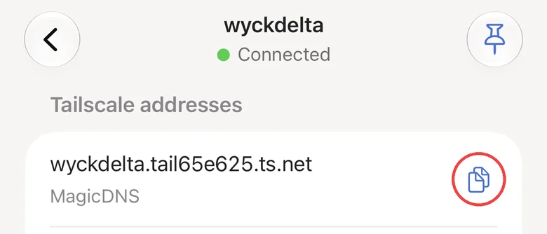
Mở bằng Safari (để sau này đưa được ra màn hình chính)ChromeChrome, Edge hoặc SafariChrome hoặc Edge, không mở bên trong Messenger / Zalo. Thanh địa chỉ có biểu tượng ổ khoá 🔒 và tên wyckdelta.tail65e625.ts.net là đúng trang. Địa chỉ cũ (trước 20/11/2026) đã ngừng dùng: xoá dấu trang hoặc biểu tượng cũ, mở lại bằng địa chỉ mới.
Lần đầu: tự tạo tài khoản
Lần đầu mở, trang hiện ngay khung Tạo tài khoản. Tên đăng nhập và mật khẩu do bạn tự đặt, không ai gửi cho bạn.
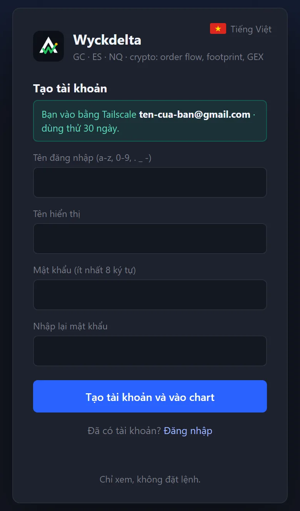
1 2 3 4 5 6- 1Dòng xanh
Bạn vào bằng Tailscale … · dùng thử 30 ngày
: Gmail bạn dùng cho Tailscale và số ngày dùng thử. Mỗi Gmail Tailscale chỉ tạo được 1 tài khoản Wyckdelta Chart. - 2Tên đăng nhập: tự đặt, 2 – 32 ký tự, chỉ gồm chữ thường a-z, số 0-9, dấu chấm, gạch dưới, gạch ngang (không dấu, không dấu cách). Đây không phải Gmail. Ghi lại để lần sau đăng nhập.
- 3Tên hiển thị: tên bạn muốn hiện trong app, gõ có dấu được. Bỏ trống thì dùng tên đăng nhập.
- 4Mật khẩu: tự đặt, ít nhất 8 ký tự, phân biệt hoa / thường.
- 5Nhập lại mật khẩu: gõ lại đúng như ô trên.
- 6Bấm Tạo tài khoản và vào chart. Trang tự đăng nhập và mở biểu đồ. Máy hỏi có lưu mật khẩu không thì bấm Lưu.
Những lần sau: đăng nhập
Mỗi thiết bị giữ đăng nhập 30 ngày. Khi trang hỏi lại, hoặc khi dùng thiết bị khác, nhập tên đăng nhập và mật khẩu bạn đã tạo. Đã có tài khoản mà trang vẫn hiện khung Tạo tài khoản thì bấm Đăng nhập ở cuối khung.
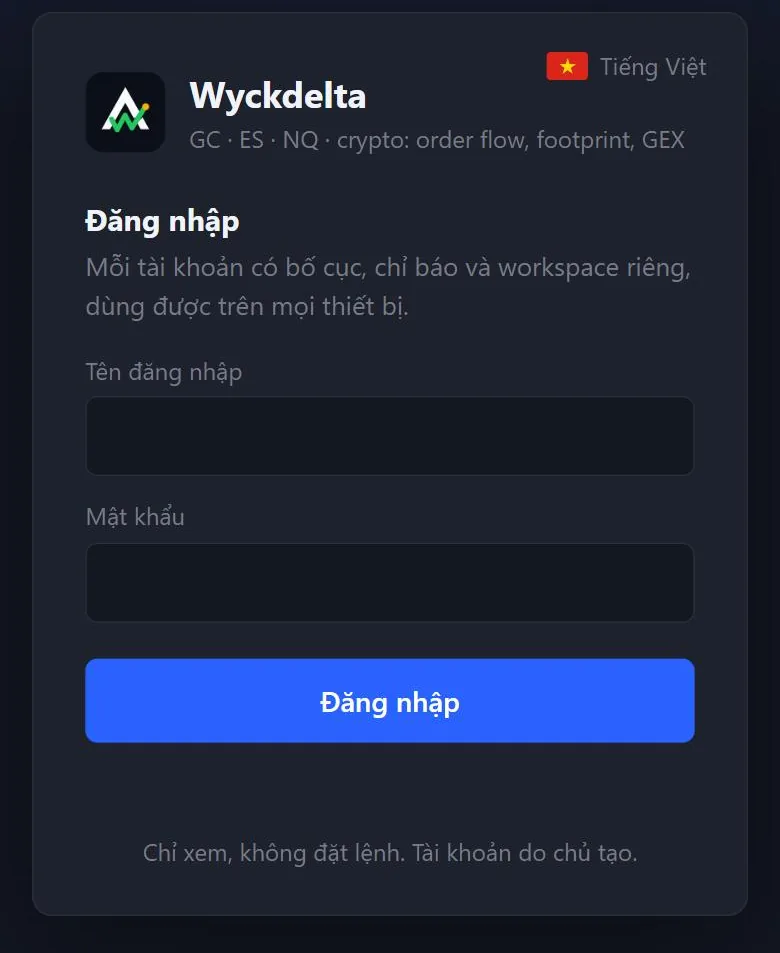
1 2 3 4- 1Ngôn ngữ: bấm để đổi Tiếng Việt / English. Không bắt buộc.
- 2Tên đăng nhập: tên bạn đã tạo, chữ thường, không dấu, không dấu cách. Đây không phải Gmail.
- 3Mật khẩu: gõ đúng từng ký tự (phân biệt hoa / thường). Gõ chậm, kiểm tra chữ hoa / thường.Kiểm tra phím Caps Lock đang tắt.
- 4Bấm Đăng nhập.
Gmail Tailscale này đã có tài khoản
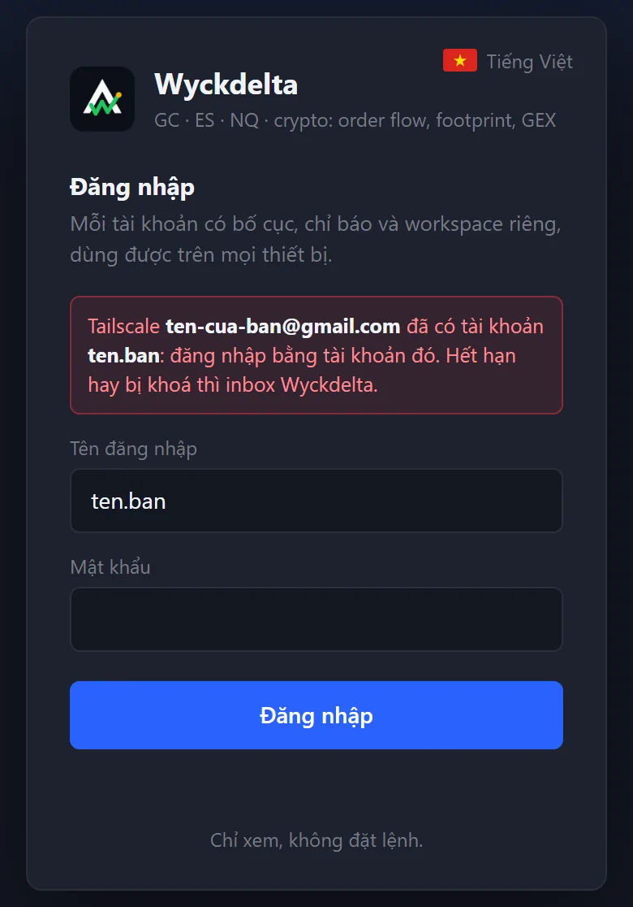
1 2 3 4- 1Dòng đỏ
Tailscale … đã có tài khoản …: đăng nhập bằng tài khoản đó
: Gmail này đã tạo tài khoản trước đây, không tạo thêm được. - 2Tên đăng nhập: trang điền sẵn tên tài khoản đó.
- 3Mật khẩu: mật khẩu bạn đã đặt lúc tạo. Quên thì nhắn Wyckdelta đặt lại.
- 4Bấm Đăng nhập. Hết hạn hay bị khoá thì inbox Wyckdelta.
Thông báo trên trang và cách xử lý
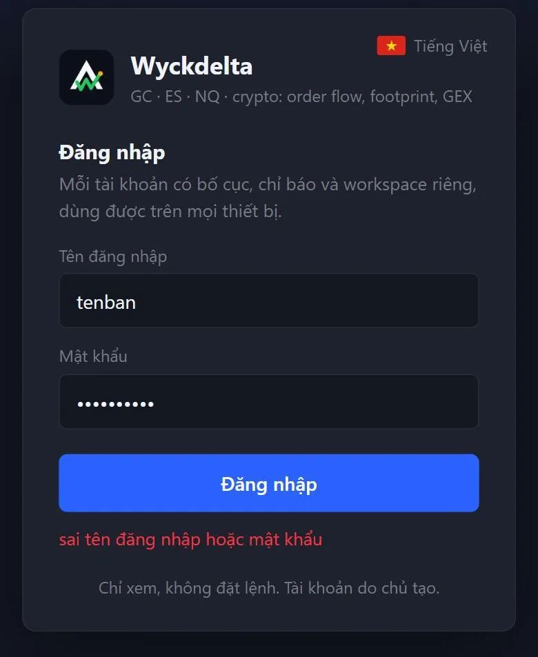
| Dòng chữ đỏ | Nghĩa là gì, làm gì |
|---|---|
| Khi tạo tài khoản | |
chỉ tạo được tài khoản qua lời mời Tailscale, khi Wyckdelta Chart mở đăng ký | Trang không nhận ra Tailscale của bạn. Bật Tailscale (xanh), mở đúng https://wyckdelta.tail65e625.ts.net (có https://, không dùng địa chỉ dạng số 100.x). Vẫn báo thì inbox Wyckdelta. |
tên đăng nhập đã có | Người khác đã dùng tên này: chọn tên khác. |
tên đăng nhập: 2-32 ký tự a-z 0-9 _ . - | Tên có dấu tiếng Việt, dấu cách ở giữa, ký tự khác (vd. @ của Gmail), hoặc ngắn hơn 2 / dài hơn 32 ký tự. Chỉ dùng chữ không dấu, số, dấu chấm, gạch dưới, gạch ngang. |
mật khẩu ít nhất 8 ký tự | Đặt mật khẩu dài hơn. |
Hai mật khẩu không giống nhau | Ô Nhập lại mật khẩu khác ô Mật khẩu: gõ lại cả hai. |
Tailscale này đã có tài khoản …: đăng nhập bằng tài khoản đó | Mỗi Gmail Tailscale chỉ 1 tài khoản. Đăng nhập bằng tài khoản đã có (xem ảnh ở trên). |
tài khoản Tailscale này đã bị xoá khỏi Wyckdelta Chart, inbox Wyckdelta | Inbox Wyckdelta. |
quá nhiều lượt đăng ký, thử lại sau | Đợi một lúc rồi bấm lại. |
quá nhiều yêu cầu đăng nhập, thử lại sau 1 phút | Bấm quá nhiều lần trong 1 phút. Đợi 1 phút rồi bấm lại. |
| Khi đăng nhập | |
sai tên đăng nhập hoặc mật khẩu | Gõ lại: tên chữ thường, không dấu cách; mật khẩu đúng hoa / thường. Quên mật khẩu thì nhắn Wyckdelta đặt lại. |
sai quá nhiều lần, thử lại sau 10 phút | Sai 5 lần trong vòng 10 phút nên bị tạm khoá: lúc này gõ đúng mật khẩu cũng bị từ chối. Đợi đủ 10 phút rồi thử lại. |
tài khoản khách đã hết hạn, inbox Wyckdelta để gia hạn | Hết thời gian dùng thử (dòng này chỉ hiện khi mật khẩu đã đúng). Inbox Wyckdelta để gia hạn. |
tài khoản đã bị khoá, inbox Wyckdelta | Tài khoản đang bị tạm khoá. Inbox Wyckdelta. |
Load failed, Failed to fetchhoặc Lỗi 502 | Mạng chập chờn, Tailscale vừa tắt, hoặc máy chủ đang khởi động lại. Kiểm tra Tailscale đang xanh, đợi 10 – 20 giây rồi bấm lại. |
Nếu trang đăng nhập không hiện ra (trang trắng, quay mãi, hoặc báo “không tìm thấy máy chủ”), lỗi nằm ở Tailscale chứ không phải tài khoản: xem Lỗi hay gặp.
✓SAU KHI ĐĂNG NHẬPBạn sẽ thấy gì
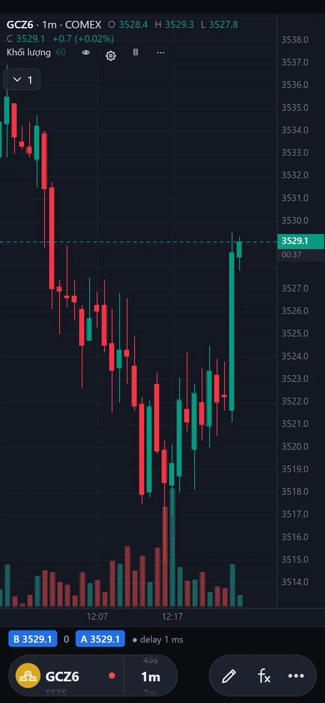
Biểu đồ hiện ngay. Thanh dưới cùng có:Bản máy tính chia làm 4 vùng:
| Thanh trên cùng | Từ trái sang: ô mã (bấm hoặc Ctrl+K để tìm GC, ES, NQ, BTC…), các khung thời gian (1m, 5m, 15m, 1h…), loại biểu đồ (Nến, Footprint, Heatmap, GEX…), chỉ báo, cảnh báo giá; bên phải là bố cục nhiều chart, cài đặt, toàn màn hình, chụp ảnh và ô tên tài khoản. |
| Cột trái | Công cụ vẽ: đường xu hướng, vùng giá, Fibonacci… |
| Cột phải | Danh sách theo dõi và các bảng phụ. |
| Thanh dưới cùng | Chọn nhanh khoảng thời gian (1D, 5D, 1M…) và múi giờ của chart. |
| Ô mã (GCZ6) | Bấm để đổi mã: vàng GC, ES, NQ, BTC, ETH, SOL… Vuốt lên / xuống để đổi nhanh. |
| Ô khung (1m) | Đổi khung thời gian: 1m, 5m, 15m, 1h, ngày… Vuốt để đổi nhanh. |
| Bút ✎ | Công cụ vẽ: đường xu hướng, vùng giá, Fibonacci… |
| fx | Thêm chỉ báo: Volume Profile, VWAP, CVD, mức GEX… |
| ••• | Loại biểu đồ (Nến, Footprint, Heatmap, GEX…), cảnh báo, danh sách theo dõi, Cài đặt (trong đó có ngôn ngữ, múi giờ) và Tài khoản. |
👤TÀI KHOẢN CỦA BẠNĐổi mật khẩu, đăng xuất, xem hạn dùng thử
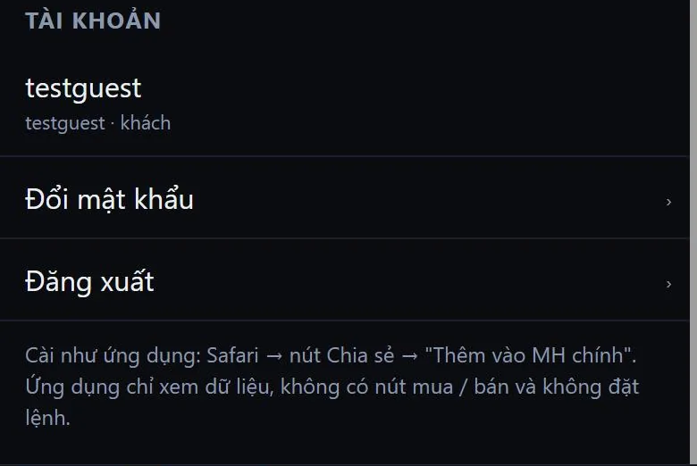
- Bấm ••• ở góc phải dưới → Tài khoản → kéo xuống cuối trang, tới mục TÀI KHOẢN (như ảnh).Bản máy tính: bấm ô tên tài khoản (vòng tròn có chữ cái đầu tên bạn) ở góc phải trên cùng. Trên điện thoại: ••• → Tài khoản.
- Đổi mật khẩu: nhập mật khẩu hiện tại, rồi mật khẩu mới (ít nhất 8 ký tự). Đổi xong, các máy khác của bạn phải đăng nhập lại.
- Đăng xuất: dùng khi đăng nhập trên máy của người khác.
- Tài khoản dùng thử hiện số ngày còn lại (máy tính: ngay cạnh tên bạn; điện thoại: dòng Tài khoản khách: còn lại trong Cài đặt). Sắp hết hạn thì nhắn Wyckdelta để gia hạn.
+NÊN LÀM · 1 PHÚTĐưa Wyckdelta Chart ra màn hình chính
Để lần sau bấm một cái là mở, chạy toàn màn hình như app, và nhận được thông báo giá.
- Đang mở Wyckdelta Chart trong Safari, bấm nút Chia sẻ ⬆︎ (ô vuông có mũi tên lên).
- Kéo xuống, bấm Thêm vào MH chính → Thêm.
- Từ nay mở bằng biểu tượng Wyckdelta Chart trên màn hình chính.
- Khi máy hỏi cho phép thông báo → bấm Cho phép.
- Đang mở Wyckdelta Chart trong Chrome, bấm dấu ⋮ ở góc phải trên.
- Bấm Thêm vào màn hình chính (hoặc Cài đặt ứng dụng).
- Từ nay mở bằng biểu tượng Wyckdelta Chart trên màn hình chính.
- Khi máy hỏi cho phép thông báo → bấm Cho phép.
?NẾU KHÔNG VÀO ĐƯỢCLỗi hay gặp
iCÂU HỎI THƯỜNG GẶPHỏi đáp
Chưa có link mời?
Inbox Wyckdelta để nhận link mời, rồi tự tạo tài khoản để vào xem footprint, heatmap và GEX.